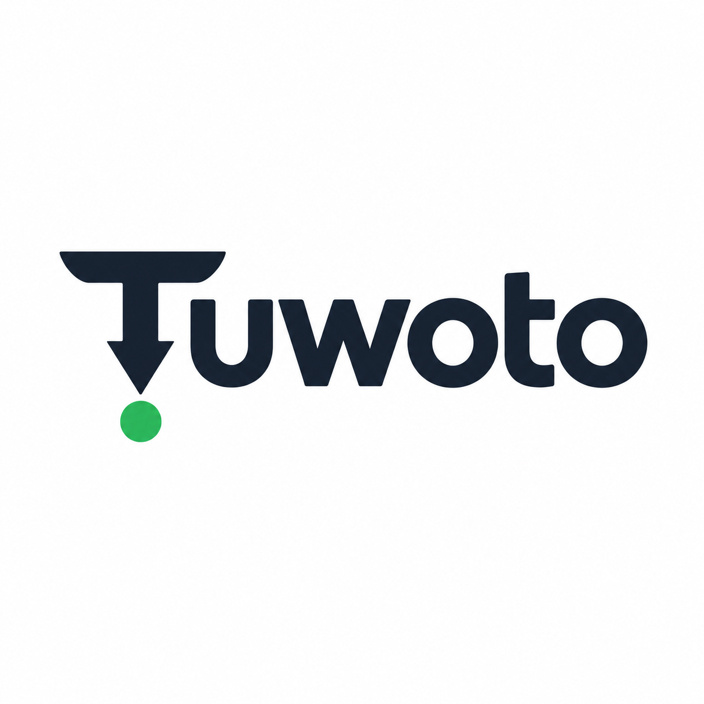

Daftar atau masuk untuk mulai mengumpulkan poin, mendapatkan lencana, dan ikut serta dalam menjaga kebersihan Gorontalo.
Nama Tuwoto berasal dari Bahasa Gorontalo yang berarti "Menunjuk" atau "Memberi Arah". Aplikasi ini hadir sebagai penunjuk arah bagi masyarakat untuk menemukan tempat pembuangan sampah terdekat, sekaligus menunjuk titik-titik krisis sampah bagi pemerintah daerah (DLH).
Menciptakan lingkungan Gorontalo yang bersih dan berkelanjutan melalui kolaborasi digital (Smart Waste Management) antara warga, petugas kebersihan, dan pemangku kebijakan.
Aplikasi ini dibangun menggunakan teknologi web modern tanpa memerlukan unduhan aplikasi besar (PWA).